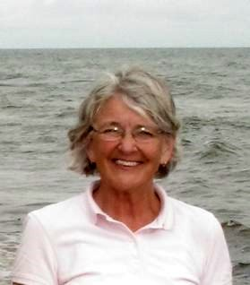

No. 81 , 2008
Our Newest Director

Lou Ann Thomson
We welcome Lou Ann Thomson as a Director of the Community Foundation of Prince Edward Island. Lou Ann was born in Prince Edward Island, entered nursing but later studied law. She retired from Legal Aid Services in Halifax returning to Brudenell where she now lives. Her community activities include being the chair of the PEI Human Rights Commission and a member of the Board of the historical recreation, Roma at Three Rivers, PEI
____________________________________
The Community Foundation News is an informal newsletter, in electronic form only, edited and published by, and at the whim of, Don Glendenning. Think of it as a letter from a friend. Forward this to others who may be interested. For further information, check our website, www.cfpei.ca or Email me at: don@glendenning.net
Island heritage
As the Community Foundation of Prince Edward Island, Directors discuss many issues facing the Island including the crisis in agriculture, our cultural heritage and the disappearance of the churches so integrated into the Island landscape. These issues are of interest and concern to summer Islanders as well.
In recent weeks the Government of Prince Edward Island has initiated a Heritage study including public hearings throughout the Island. Readers are invited to attend and are encouraged to make their views known.
Feb. 11-Hunter River, Lion’s club
Feb. 13-Miscouche, le Musee Acadien
Feb. 19- Summerside, Eptek Centre
Feb. 20-Montague, Church of Christ
Hall
Feb.21-Charlottetown, Charlottetown
Hotel
Information about the public consultations, storm dates, study questions and project updates is available from:
http://islandheritagestudy.wordpress.com
Phone: 902-675-4134
This is your chance to be heard. If you cannot attend, I encourage you to make a phone call, send a letter or an Email and do it soon.